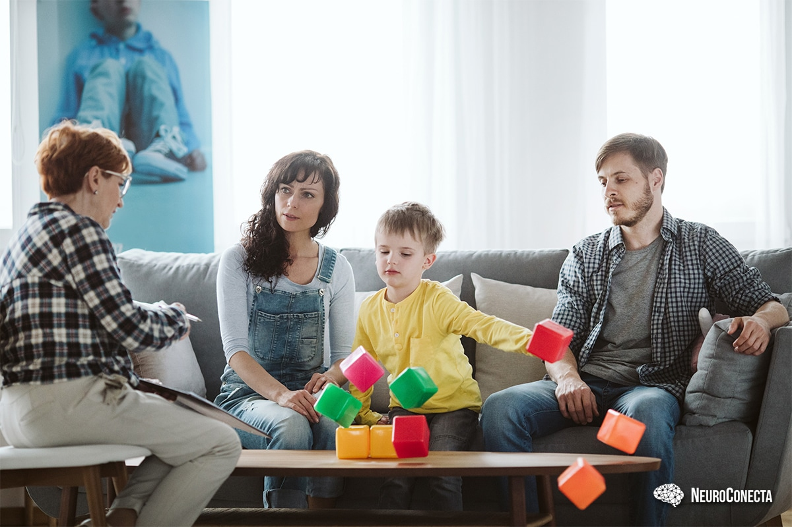

A atenção de profissionais de diferentes áreas é muito imporante no processo de identificação, diagnóstico e tratamento de crianças com transtorno do espectro autista. Alguns dos profissionais importantes nesses processos são os enfermeiros, médicos e psicólogos que podem ajudar tanto para identificar riscos e auxiliar no diagnóstico, quanto para promover um ambiente favorável e saudável para crianças com TEA. Os profissionais de saúde utilizam uma abordagem integrada e multidisciplinar para lidar com o autismo, considerando os diversos ambientes em que a criança vive, como a casa, a escola e a comunidade. Para identificar o TEA requer alguns progressos com diferentes áreas da saúde.
Os profissionais da área de saúde tentam promover um ambiente saudável para crianças com TEA, e uma das formas é auxiliar as pessoas com dicas. Uma das dicas é promover a inclusão social, promover oportunidades de participação em atividades recreativas, esportivas e culturais que incentivem a interações sociais e o desenvolvimento de habilidades sociais.
Os profissionais de educação adotam várias estratégias para lidar com o autismo nos diferentes ambientes em que a criança vive, visando a inclusão e o desenvolvimento acadêmico e social da criança. Eles lidam com o autismo de maneira abrangente e adaptativa, garantindo que as necessidades específicas e especiais de cada criança seja atendida em diversos ambientes.
Em alguns casos professores e educadores notam sinais prematuros de autismo e ajudam outros profissionais para realizar avaliações detalhadas, assim auxiliando os professores a elaborarem um plano de educação que se adapta ao currículo e as metodologias de ensino às necessidades da criança.
A colaboração entre educadores e médicos é fundamental para promover um ambiente saudável e favorável para a criança, envolvendo reuniões regulares com psicólogos, terapeutas e fonoaudiólogos para ajustar continuamente estratégias de intervenção.
A formação continuada dos professores sobre as melhores práticas para o ensino de crianças com autismo também é uma prioridade. A comunicação regular com os pais é mantida, garantindo que eles estejam informados sobre o progresso de seus filhos e possam reforçar as estratégias em casa.
A relação entre a criança, os pais e os responsáveis deve ser pautada pelo amor, respeito e compreensão. Os pais devem se informar sobre o autismo e procurar ajuda profissional para entender as necessidades da criança. Eles podem auxiliar a criança na comunicação e na socialização, criando rotinas e estabelecendo limites, praticando novas habilidades sociais com o autista em vários lugares e também com pessoas diferentes. É muito importante também:
Portanto, a família não deve abrir mão de seu lazer, de seu bem-estar e de seus limites. O autista precisa ser tratado como um membro da família e não como um soberano, a quem tudo é permitido.
Para que outras crianças consigam lidar com crianças que possuem TEA é necessário que adultos ou responsáveis abordem esse tema com elas e expliquem de maneira simples sobre o que é.
Exemplificando que as pessoas são sinônimos de diversidade, usando uma linguagem simples e adaptada para a idade, forcando nas informações principais sobre o tema e estimulando a empatia e a inclusão da criança.